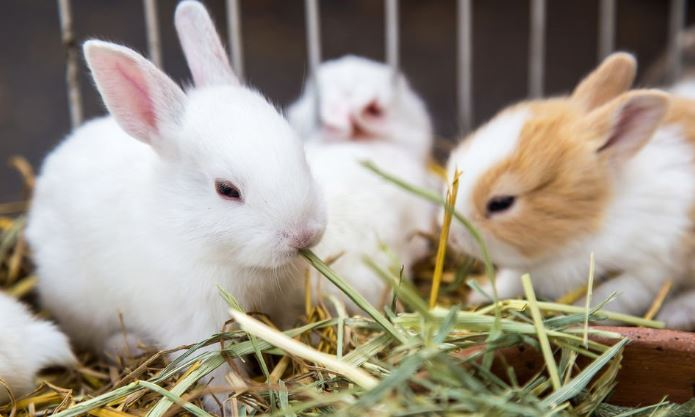
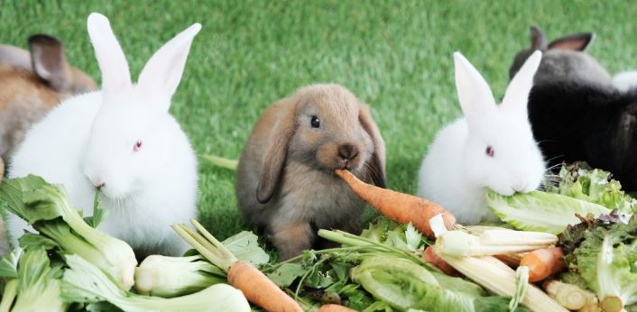
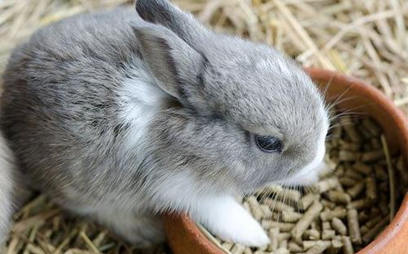
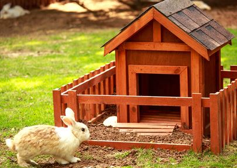
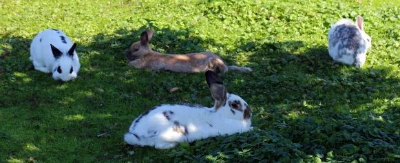
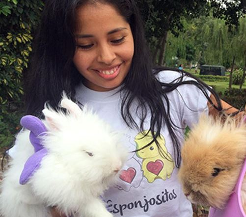

¿QUE COME UN CONEJO?
En el primer puesto tenemos al "HENO" algo fundamental en su alimentacion diaria

Aqui encontramos las hierbas, plantas y flores secas. Estos aportan fibra digerible y no digerible que
ayudan con la digestion, formacion de heces y desgaste de los dientes,tambien contiene
proteinas,vitaminas y minerales.

Es el alimento fresco que les aportara hidratacion, vitaminas y minerales. Que acompañaran diariamente al heno
estas ensaladas deberan contar con minimo 6 diferentes vegetales.

Complemento nutricional, su administraciion debe ser limitada ya que si es consumido en abundancia puede provocar
obesidad, se debe verificar que la composicion de la marca elegida no contenga elementos toxicos para los
conejos.
¿COMO DEBE VIVIR TU CONEJO?

- Lo mejor para un cone es tener comodidad
Debe tener un habitad amplio, comodo y seguro, tu hogar debera estar adecuado para que el conejito no se haga
daño
y bajo ningun concepto debe permanecer enjaulado
¿QUIEN DEBE ATENDER LA SALUD DE MI CONEJO?
- El profesional debera ser especialista en animales exoticos
Las revisiones se recomiendan cada 6 meses hasta los 2 años de ahi segun el estado de salud de tu conejo sera mas
seguido, entre los examenes importantes tenemos los analisis de sangre,la ecografia,analisis de
heces,radiografias entre otros.
TERMINAMOS ... CON ALGUNAS CURIOSIDADES DE LOS CONES

- Los conejitos tienen 28 dientes y estos nunca dejan de crecer.
- Los conejos no se alimentan de zanahorias !SOLO LAS HOJAS!
- Los conejos no son roedores son lagomorfos

Exixten albergues en Lima-Peru donde puedes adoptar conejitos, ellos son:
- Esperanza Bunny
- El Paraiso de los cones
- Campanita Tilin Tilin